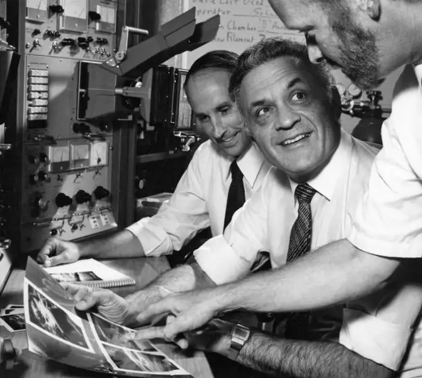
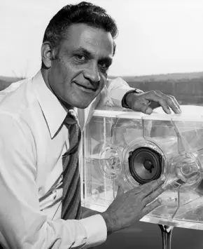

<section class="brand">
  <div class="container">
      <div class="brand__box">
          <div>
          <h2 class="brand__title">brand creation history</h2>
          <p class="brand__subtitle">
            The history of Bose Corporation began with disappointment. In 1956,
            MIT graduate student Amar Bose bought one of the best stereo systems
            at the time for his home. After a few minutes of listening to the
            audio recording, his bewilderment turned to disappointment.
          </p>
            
          <p class="brand__subtitle brand__sub">
            From Amar's point of view, the sound was so flat and unnatural that
            it was better not to listen to the music at all than to listen to it
            in such a distorted form.
          </p>
          </div>
            
      </div>
      <div class="brand__wrap">
         
         <div class="brand__wraper">
          <p class="brand__subtitle brand__sub">
            Bose's frustration grew into a firm determination to build audio
            equipments that would reproduce sound with impeccable accuracy and
            naturalness
          </p>
            
          <div class="brand__container">
            <svg class="brand__icon">
              <use href="../img/symbol-defs.svg#lapki"></use>
            </svg>
            <h3 class="brand__head">
              Never stop dreaming. Always dream of the best, and think about how
              to achieve it.
            </h3>
            <p class="brand__principal">Amar Bose is a company founder</p>
          </div>
          </div>
      </div>
    </div>
</section>
